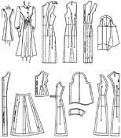
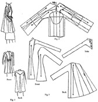

1942—Modern Pattern Design
by Harriet Pepin
Chapter 11—Coats
This chapter will be devoted to the discussion of outer garments. In the previous chapter you studied how to produce slips by assembling waist and skirt patterns or using hip length slopers. This same method would be used for making any full length garment.
The designing and making of coats involve many principles of garment construction which make it a highly specialized field in the industry. As it is closely related to the men's tailoring field it is natural to observe that many men have entered this phase of designing. Usually a manufacturer will specialize in coats and suits.
The actual making of the pattern differs little from the method which would be used to produce any other garment pattern. The principles of cutting are much the same. The fabric is limiting, as only a certain amount of manipulation can be done in the bulky fabrics used for making outer garments. If the fabric used is much the same as that to be used for dresses, the styling may be similar to a dress, but if it is thick and bulky the designer must rely upon silhouette interest and proportionate spacing for beauty in his garments. If the fabric is a hard twisted worsted, such as that which would be used in producing men's suits, then the finished woman's suit will be as simply cut as a man's garment and will resemble a man's suit.
Coats and suits made from softer fabrics which have been especially designed for the purpose are usually referred to in the fashion terms as being "dressmaker types." That is an apt term because it means that the fabric is sufficiently soft and pliable to require no special heavy pressing equipment and therefore the garment may be created by the small dressmaker who might also create dresses. The second type is called the "man-tailored" garment and to turn out such a garment, the workmanship must be that commonly used in finishing men's apparel. It has a distinctly mannish appearance.
As the construction of the latter would require special training and equipment, it is natural that the majority of women's coats fall under the classification of "dressmaker type" garments.
Although the majority of coats have a lining, occasionally summer weight garments are partially lined only. The pattern for the lining of the coat should be slightly smaller than that for the coat. Some dressmakers use the same pattern for cutting the lining but, when the seams are stitched, they are made slightly deeper than the original seam allowance and this process reduces the size of the lining slightly. Naturally, the more seams there may be in a garment, as in vertical fitting, the less the adjustment would be in each seam. The length of the lining is not altered. About one half inch reduction across the front and back should be quite sufficient.
If you will notice finished garments, you will usually see a vertical pleat laid in the lining at the center back. This provides expansion with arm movement. As wool will stretch to accommodate body movements and silk will not, this pleat is important.
As all coats must be designed to close at the front or side, a facing is needed to finish the front. Usually this facing is made from six to eight inches in width and it takes in the front neck section also. This facing would be made from the final garment pattern. Inspect finished garments for facings.
From 1938 to 1942, padded shoulders have been included in many dresses, and in most outer garments for several years. When paddings are to be used, allowance must be made in the pattern for that added bulk. Such methods have been diagramed previously. (See page 125.)
The methods used for cutting and fitting most full length garments may be classified as follows:
- Vertical seam fitting.
- Seamed waistline with control darts.
- Combination of these two.
- Straight, Boxy or Swagger types.
- Combination Straight or Fitted with Swagger.
The prevailing silhouette of any season will determine which of the foregoing methods would be used the most. Illustrations and diagrams showing the method for cutting the pattern for each type are furnished herewith. It is suggested that you work up all of these designs so that you may observe the results. The sleeves have been included to show you how the garment is coordinated in its design theme. These need not be worked up because your interest at this moment is the study of silhouette of the body of the garment.
Vertical Fitting
The pattern for this style of garment—with many variations—could be produced from any of the variations of the French Lining jacket patterns illustrated in this text. It is essential that the jacket pattern being used be designed so as to provide for the hip line to fall on the horizontal grain of the fabric. Turn back to the section devoted to jackets (page 82) and note which of the patterns provide the proper hip line and which do not. When completing your pattern for this design, introduce greater sweep to the hemline.
Seamed Waistline Fitting
The coat which has a seamed waistline may be developed from any combination of bodice and skirt patterns in just the same manner as a dress, except that provision must be allowed for an opening down the front or side. Note that grain indicators are established in construction pattern. The side front skirt section, when finally attached to the bodice front panel will maintain the original shaping which was provided from waist to hip in sloper. Front facing eliminates yoke seam. No lap is required in this design.
By slashing sleeve from wrist to point of elbow dart, basic elbow control dart is closed partially and thus the larger wrist measurement required in a coat is provided. The back bodice darts are treated as soft waistline fullness between notches.
This is a youthful design which might be made of a bulky novelty silk or rayon crepe, medium or light weight wool. Such designs involving gentle fullness might also be found in soft, thin fur pelts such as kid or broadtail caracul. This design also suggests opportunity for interesting manipulation if a striped fabric were selected for it. When using the fabric on a bias to secure a diagonal effect, the sections being so handled would have a new grain indicator placed from the present line with the aid of the triangle, as instructed in previous chapters. This design also suggests the possibility of using a combination of fur and fabric, the yoke and side front sections being made of sheared beaver or some other flat fur and the remaining portions made of a thick wool. In such case, the portions which would be covered with fur need not be made from expensive wool but could be cut from pre-shrunk lining cotton.
Combination Fitting
This pleasing design for a coat is made from a variation of the French lining with center front panel seamed at the waistline to provide opportunity for placing more fullness below the waist than above it. The belt is merely an extension from the side sections. This produces a silhouette having a "forward movement" and would be suitable for the angular type figure. The sleeves are a modified Bishop style gathered into cuffs which are large enough to slip over the hand easily. Together with the soft roll reefer collar, this added bulk would softly flatter the extra slender woman.
This style might also be adapted as a maternity coat, the gathered center front being made with an elastic which would make the garment adjustable for wear during the earlier months. The fabric for this "dressmaker type" garment should have pleasing draping qualities because of the use of gathers.
Boxy Type Silhouette
The boxy and swagger silhouettes require control maintained above the bust and the shoulder blades just as the Dolman cape would. This may be accomplished by concealing the control in some seam of the design or it might be placed at an angle extending from the neckline and thereby be hidden under a rever. When the curves at the back have been flattened through the use of shoulder pads, the ease may be "worked in" at the point and then, through steam pressing over a curved pad, the wool fabric would mold into a soft curve. But when a fabric is used which will not respond to steam and shrinking, the darts would be placed in any convenient position, dependent upon the design of the garment. See page 75. The darts which would shape the hip length sloper at the waist are ignored just as was done in making the Dolman cape.
To achieve the "boxy" silhouette which provides extra room around the lower part of the front and back armscyes, a slash is made from hem to arm-scye as shown by points A and B, Fig. 3. When spread is completed, note the resulting change of shape in the armscye as shown in Fig. 4. But, because the boxy coat has little or no flare at the hemline, the extra width under the arm must be removed from the underarm seam as is shown by the broken lines in Fig. 3. If two thirds of the width is removed, this should produce a boxy silhouette of pleasing proportions. Note also that the normal shoulder seam has been raised to accommodate the thickness of the padding. It has also been moved outward. In such cases, it is necessary to measure the new armscye and actually fit in a muslin sleeve until it hangs correctly. The final pattern for the sleeve is then made accordingly.
Swagger Type Silhouette
Below is shown a typical "swagger" silhouette. Unlike the previous style, the full hemline is retained to provide movement in the silhouette. When cutting this pattern, it is very important to watch your proportions when sketching in the first divisional lines which form the panel and sleeve strap in the front and the yoke and sleeve strap in the back. See Fig. 2, showing arrangement of slopers and the spacing of these divisional lines. Broken lines A and B show place where flare will be introduced by slashing and spreading as shown in back section of Fig. 3. Amounts given produced a pleasing half size model which reached to within eleven inches of the table level. Flare added to center back seam will increase the movement throughout the back of the garment.
Combination Fitted and Swagger Silhouette
Here you see the same design adapted to a combination silhouette which has a fitted front and a swagger back which is still more flared than in the previous diagrams. Compare the Figs. 2 on these pages. Note in the combination silhouette, this front divisional line forming the panel has been made to follow the line of the basic dart and then a slight flare has been introduced below the hip level. Two broken lines appear in the straight back section to throw extra fullness in the back. Note distribution of this added fullness in back section of Fig. 3.
The belt slips through an opening left for that purpose in side seams. This gives the freedom to the swagger back and retains the front section in position.
Similar combination designs can be produced for the fitted front accompanied by the dolman or circular cape. (See page 140.) Likewise, the tailored suit collar, reefer collar and others suited to outer garments may be drafted for coats. Methods for so doing would be as previously diagramed.
If the reader wishes to specialize in the field or women's coats and wraps, a brief apprenticeship to a tailor would teach him much about the technique in handling coat fabrics and the fine tricks used to interline the garment to prevent excessive stretching through the shoulders, "staying" the seams, et cetera. He should study coats for classification in silhouette, for their functional classification and for styling detail common to such types of garments.
In the opinion of the author, the field of coat design might be said to be the architectural phase of clothing design. When it has been mastered, it pays proportionate returns for the effort.
Fabrics used have their limitations. The methods used to cut and style them smartly are singularly common to coat manufacturing.